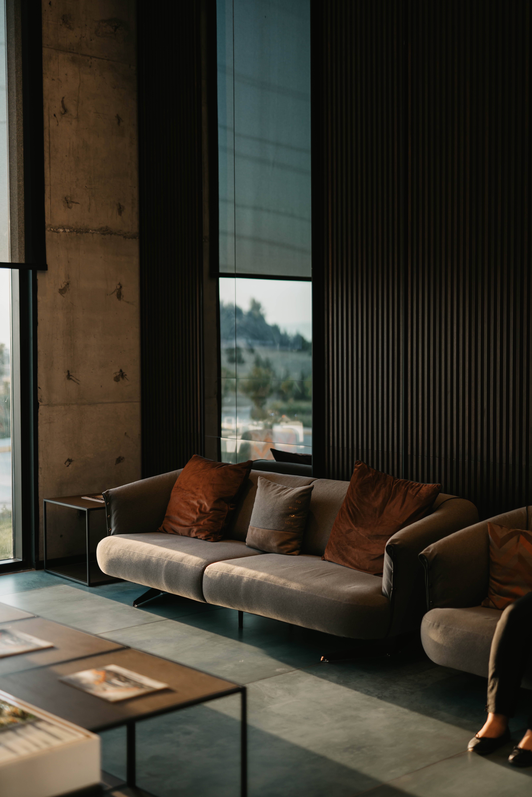

Basic principles
Emphasis

A room where everything gets equal importance will seem either scattered or boring. You need an anchor. Architectural
spaces often have points of interest such as a fireplace or a window with a beautiful view. You can choose to
enhance the built in focal point by arranging furniture around it to emphasize it. In a room that lacks such a
built in point of interest you can create one through groupings of furniture or using an unusual or large piece.
Proportion and Scale

Proportion is the ratio between the size of one part to another, and scale is how the size of one object
relates to another or to the space in which it is placed. For instance, a large overstuffed sectional in a
small room will be out of scale. Some proportional relationships are more pleasing than others. The ancient Greeks
came up with the Golden Section, which sought to reduce all proportion to a simple formula: The ratio of the
smaller section to the larger section should be the same as that of the larger section to the whole.
This proportion is present in nature, and artists and architects have used it as well.
Harmony

Harmony is created when all the elements act together to create a unified message. Just as rhythm can create excitement,
harmony creates a sense of restfulness. For instance, you can create harmony by using just one color, even though your forms
vary greatly in shape, size and texture.
Tricks
1. Paint
Though painting is the cheapest investment you can make, it's also the one with the most dramatic
result. Go ahead and put some color on walls for a inexpensive and fresh new look.
2. Do It Yourself
The biggest budget buster is hiring others to do things you could do. Consider what you'll save by
taking on some relatively simple projects: painting, tiling, installing a new floor, sewing curtain panels
or throw pillows — whatever you feel up to trying.
3. Shop Secondhand Stores

Thrift stores, consignment shops, church rummage sales, online auction sites, estate
sales and even salvage yards offer a bounty of discount decorating booty. Look for
furniture with solid construction and classic lines that new upholstery or paint will
bring back to life.